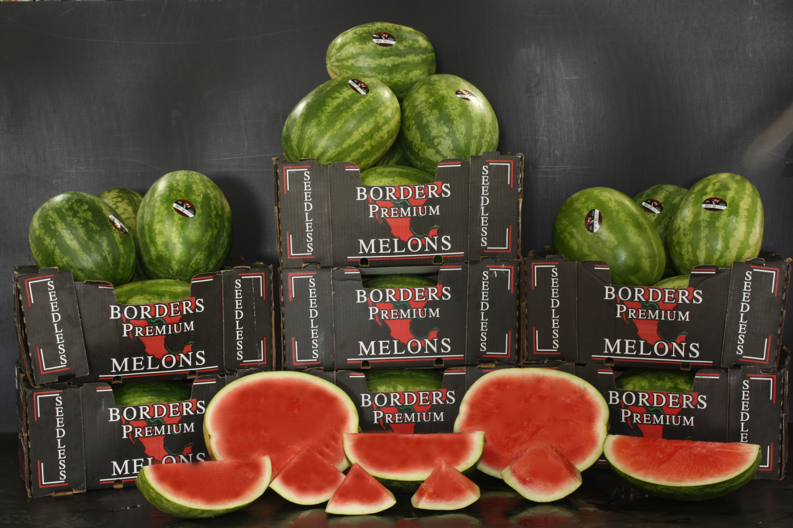

About Us
Borders Melons East LLC, was born out of an increased demand for our high quality watermelons from our east coast customers. Conveniently located on I-75 in southern Georgia, Borders Melons East is strategically located from a logistical standpoint, as well as being perfectly situated in the heart of the "watermelon growing capital".
Our founding company, Borders Melon Co., based in Edinburg, Texas, is one of the largest growers and shippers of watermelons in North America. With over 7,500 acres devoted to growing watermelons, the Borders Melons family of companies guarantees its customers a year round supply of high quality watermelons.
Both Borders Melon Co. and Borders Melons East are actively involved in the watermelon industry. Nowell Borders is past president of the National Watermelon Association and currently serves the association as Chairman of the Board. Barry Plotnick, managing member of Borders Melons East, is currently serving on the board of directors of both the Florida and Georgia Watermelon Associations.
At Borders Melons East, our philosophy is simple. We strive to give our customers the finest quality watermelons available, grown and packed under the most stringent food safety guidelines and the utmost regard for customer service.
Borders Melons East
The Borders Melons family of companies is the largest grower/shipper of watermelons in North America. With over 7,500 acres devoted to growing watermelons, we guarantee our customers a year-round supply of high quality watermelons. Our melons are packed under stringent quality assurance and food safety guidelines in order to deliver the safest and best melons possible to our customers. There is no substitute for quality. Buy Borders Best Watermelons.

Active Users (34)

Food safety and quality are our number one priorities at Borders Melons East. We became one of the pioneering companies in food safety, in the watermelon industry, by having all facets of our operation tested and certified safe by Primus Laboratories to ensure an end product 100% safe for the consumer. We were among the first in the industry to wash and sanitize our watermelons to reduce the risk of contamination from food borne pathogens. We are proud of our superior four star rating under the Primus scoring system. To achieve this level of compliance each step in the supply chain, every farm, harvest crew, cooler and packing facility must be audited by Primus Labs at least once per year, with no critical violations noted. Borders Melons East was the first watermelon facility in the state of Georgia to be both Primus and Georgia GAP certified.
All of our watermelons are washed (with potable non-recycled water), gently scrubbed, and then sanitized with a patented antimicrobial called Selectrocide™. Selectrocide™ is EPA registered for use on watermelons and is also used in the wine, pharmaceutical, and produce processing industries, with efficacy against a broad spectrum of pathogens. We were the first in the watermelon industry to use this product and were instrumental in establishing SelectrocideTM as a produce sanitizer. There is no substitute for quality, and at Borders Melons East, you can rest assured "food safety" is an inherent element in our definition of "quality". Simply the best - Borders Best Watermelons.